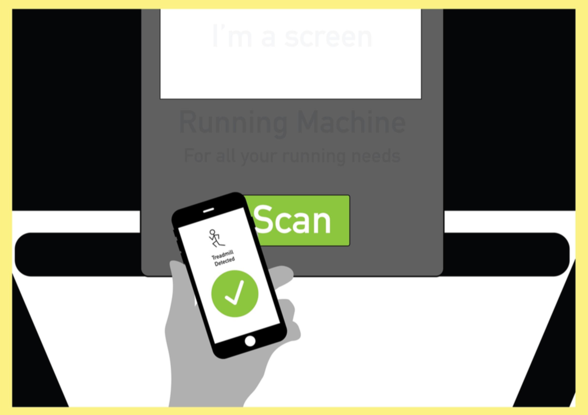
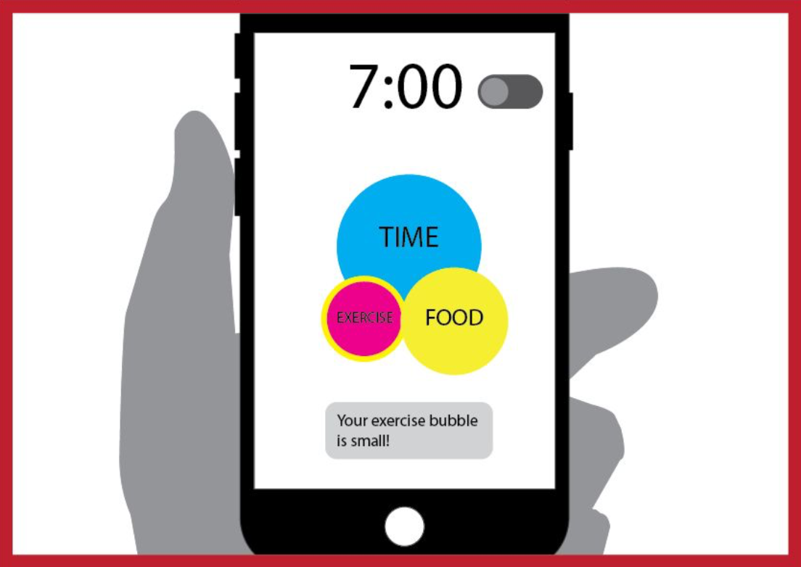
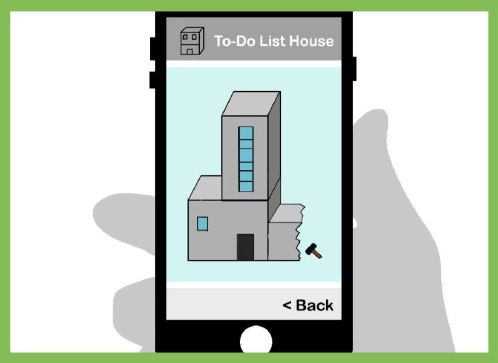

Among the working adults and elderly, many suffer from poor time management skills to make their personal health a priority. We created a mobile application concept that allows the user to create a virtual pet to reflect the user’s lifestyle, as its appearance can be changed depending on the user’s daily or weekly activities.

Brief: Personal Health
We had the opportunity to seek out a topic / problem area of our choosing where we had selected personal health. The design process consisted of 4 phases: Discover where we had to research a problem area and identify a problem scenario, Reframing where further research had to be conducted on the problem scenario which was then the data had to analysed and synthesised, and later reframe the problem using the Frame Creation Model (Dorst, 2015). Ideation had to design conceptual solutions to that problem and Prototyping and Testing where a problem solution had to be designed, developed, tested and evaluated with potential users.
Role
Class
Interaction Design Studio 2019 (12 weeks)
Team
Tools
Problem
Among the working adults and elderly we interviewed, many either suffer from poor time management skills to make their personal health a priority. As a result, the majority of our target group are unable to regularly exercise a minimum of 150 minutes per week, or regularly cook a healthy meal for themselves, causing many to eat out or buy takeaway for their meals. The majority of their time is taken by balancing work and family, or are simply unable to manage their time effectively. Our goal is to find a solution that will encourage our target group to live healthier, and engage them throughout the process. This may also be achieved by involving friends or family to participate with them.
Solution
The solution is, VPet, a virtual pet mobile application that is created to be a representation of the user. It encourages the user to take care of their personal health through taking care of the virtual pet. Some exercises and tasks the app encourages to perform include running, calorie tracking and working out. The app aims to undertake a more friendly and playful approach so it can be easy yet fun to use.
Goals
Encourage Health Consciousness
We wanted to provide incentives to allow the user to adhere to healthy eating or practices to maintain a healthy lifestyle. The primary goal was to find a solution to allow users to constantly use the application to achieve results.
Use UX to find different solutions
Utilising user experience, I had a personal goal of reframing the issues to find different solutions. I wanted to develop my design thinking to explore potential solutions to solve the problem.
Developing UI skills
As this was the proper first time working with wireframes and UI, I wanted learn and understand UI designs through testing and iterating along with colour palettes and obkect placement.
Process
Discovery
(Individual research was conducted before coming together as a team to analyse the findings together)
Interviews
Interviews were selected as a method of research for full engagement between the interviewer and interviewer. It brought out various behavioural traits of the interviewees that would reflect hidden insights beneficial for research. The interviews were carried out in the work environment of the interviewee to allow them to feel comfortable with answering the questions. It was also for contextual purposes where the interviewees was able to behave as they normally would within their environment. A total of 10 interviews were conducted.
Questionnaires
Questionnaires was conducted to gather data quickly from a various range of different surveyees. The method was utlisied to attain mass data to easily draw up insights and conclusions between the responses between surveyees.
Online Enthnography
Online Enthnography was used to investigate past solutions that were created to tackle the issue of unhealthy eating and lack of exericse. The method was used to determine how certain solutions succeeded in some areas and why it failed in others. It provided guidelines and criteria for potential solutions to succeed.
Reframing
Team Research Insights
Each of the team members' research was analysed (as individual research was conducted) and we found that based on the full-time working individuals whom we interviewed, our insights revealed a majority of them struggle to keep a well-balanced lifestyle as time constraints, costs and convenience encouraged them to live an unhealthy lifestyle. These three components are intertwined as one is the result of the other.
Time constraints led to individuals to purchase fast foods as it was convenient and relatively cheap. Poor time management resulted in individuals in skipping meals and/or not preparing meals. As poor time management is the core issue of unhealthy living, insights were drawn where better management of time could possibly assist and encourage individuals to better their lifestyle.
Among the interviewees were full-time working parents, through our interviews, it was revealed that these individuals were able to regularly exercise under two conditions: when their children were busy or exercising with their children. It also illustrates the difficulty for parents to find time for exercise as responsibility for their child is a higher priority. However there a handful of individuals that utilise basic applications for their fitness needs such as step counters on in-phone apps.
Affinity Diagram
Ideation
Criteria to Evaluate Success
Usability
Accessibility
Visual Elements
Multi-functional
Time Management Tools
Incentive
Design Concepts
Tap-to-track
This concept enables the user to link their smartphones with fitness equipment and their refrigerators in order to keep track of their physical activity, dietary habits, and nutritional intake. However, this concept fails in being able to maintain the user’s interest. This was partly due to the concept intending to help the user start their routine, and once they have gotten used to their routine, they cease to find the use to maintain using it.
Balanced Bubbles
This concept provides the user with an app that aids them with time management and scheduling. It encourages the user to balance their free time, exercise, and diet, by visualising them as 3 bubbles which grow or shrink depending on their activities related to each bubble. This idea leverages on its visual aesthetics through the use of colours and icons, whilst being easy to navigate. Unfortunately, it is limited in keeping the user interested and engaged, as its main draw comes from filling a progress bar based on the tasks the user completes.
House Builder
This concept requires the user to input a list of tasks or reminders for the day. Each task is categorised under either free time, exercise, or food. After completing all their tasks for the day, the user may build an additional floor to a virtual house, which they may compare with other users, and are ranked based on certain aspects of their virtual house. While this concept aims to keep the user engaged through its ranking system, similar to our “Balanced Bubbles” idea, there is currently no way to track the user’s activities and automatically checking off tasks from their to-do list, meaning any tasks can be manually checked off.
Rationale of Final Concept
Our final concept takes inspiration from our House Builder idea, as well as a similar idea from our initial concepts, to create a Virtual Pet (Vpet) - a reflection of the user.
This concept requires the user to spend the majority of their time with their Vpet, allowing it to keep track of the user’s physical activities, free time, and even the food they eat.
We believed that using a Vpet, instead of building a house, better engaged the user and created a more personal connection between them and the app. A Vpet allowed a more dynamic reflection of the user’s lifestyle, as its appearance can be changed depending on the user’s daily or weekly activities. Compared to the house builder, once another floor has been built, it would make less sense to demolish it afterward.
Furthermore, a Vpet could work better with devices other than a smartphone, such as a smartwatch, or an individual handheld device. While the House Builder could be imported to other devices, we believe that the idea of keeping a Vpet with you at all times makes more sense than keeping a Virtual House with you at all times. This individual device could even have a unique appearance, such as a dog or cat, depending on the type of Vpet the user would prefer.